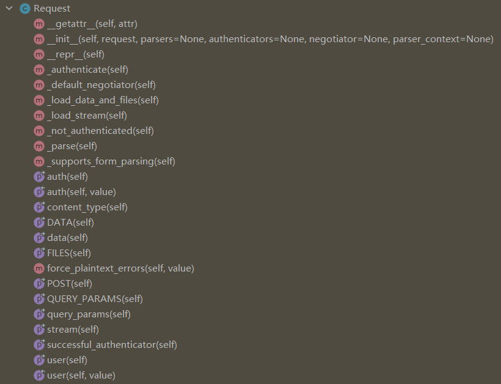
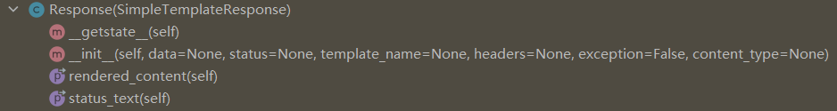
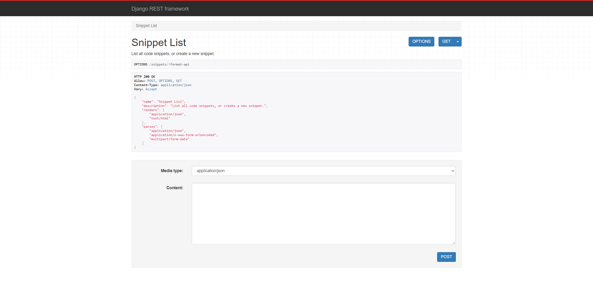

本书作者：测试开发刚哥，文章版权归个人所有，未经授权请勿转载。
Django视图是用来处理请求和响应的，Django默认是按Form和Template来设计的，如果要处理以JSON格式为主的RESTful API，那么就需要对Django请求和响应的处理代码进行优化改造，本文就来介绍DRF在这一部分的技术升级。
Request
DRF把Django的HttpRequest扩展成了Request：

其中最核心的属性是request.data，它和request.POST的区别如下：
request.POST # 只处理表单（Form）数据，只支持POST方法
request.data # 处理任何数据，支持POST、PUT、PATCH方法
Response
DRF的Response继承自Django的django.template.response.SimpleTemplateResponse：

Response可以根据客户端的请求render合适的content type：
return Response(data)
我摘取了rendered_content()函数的代码：
@property
def rendered_content(self):
renderer = getattr(self, 'accepted_renderer', None)
accepted_media_type = getattr(self, 'accepted_media_type', None)
context = getattr(self, 'renderer_context', None)
assert renderer, ".accepted_renderer not set on Response"
assert accepted_media_type, ".accepted_media_type not set on Response"
assert context is not None, ".renderer_context not set on Response"
context['response'] = self
media_type = renderer.media_type
charset = renderer.charset
content_type = self.content_type
if content_type is None and charset is not None:
content_type = "{}; charset={}".format(media_type, charset)
elif content_type is None:
content_type = media_type
self['Content-Type'] = content_type
ret = renderer.render(self.data, accepted_media_type, context)
if isinstance(ret, str):
assert charset, (
'renderer returned unicode, and did not specify '
'a charset value.'
)
return ret.encode(charset)
if not ret:
del self['Content-Type']
return ret
Status codes
如果在代码中直接写数字形式的状态码如400，是不容易阅读的，于是DRF提供了标识符如HTTP_400_BAD_REQUEST来替代。我列一些常见的状态码标识符：
HTTP_200_OK = 200
HTTP_201_CREATED = 201
HTTP_204_NO_CONTENT = 204
HTTP_400_BAD_REQUEST = 400
HTTP_401_UNAUTHORIZED = 401
HTTP_403_FORBIDDEN = 403
HTTP_404_NOT_FOUND = 404
HTTP_405_METHOD_NOT_ALLOWED = 405
HTTP_500_INTERNAL_SERVER_ERROR = 500
HTTP_502_BAD_GATEWAY = 502
HTTP_503_SERVICE_UNAVAILABLE = 503
HTTP_504_GATEWAY_TIMEOUT = 504
全部的状态码标识符可以在rest_framework.status模块中看到。
@api_view和APIView
DRF对API视图做了2个封装：
@api_view用于函数视图。APIView用于类视图。
它们提供了一些新功能，比如：
- 检查请求是
Request对象 - 添加上下文到
Response对象 - 返回请求错误如
405 Method Not Allowed - 当
request.data格式有误时，抛出ParseError异常
改造views.py
接着就用上面这几个新实现对我们之前写的snippets/views.py进行改造：
from rest_framework import status
from rest_framework.decorators import api_view
from rest_framework.response import Response
from snippets.models import Snippet
from snippets.serializers import SnippetSerializer
@api_view(['GET', 'POST'])
def snippet_list(request):
"""
List all code snippets, or create a new snippet.
"""
if request.method == 'GET':
snippets = Snippet.objects.all()
serializer = SnippetSerializer(snippets, many=True)
return Response(serializer.data)
elif request.method == 'POST':
serializer = SnippetSerializer(data=request.data)
if serializer.is_valid():
serializer.save()
return Response(serializer.data, status=status.HTTP_201_CREATED)
return Response(serializer.errors, status=status.HTTP_400_BAD_REQUEST)
@api_view(['GET', 'PUT', 'DELETE'])
def snippet_detail(request, pk):
"""
Retrieve, update or delete a code snippet.
"""
try:
snippet = Snippet.objects.get(pk=pk)
except Snippet.DoesNotExist:
return Response(status=status.HTTP_404_NOT_FOUND)
if request.method == 'GET':
serializer = SnippetSerializer(snippet)
return Response(serializer.data)
elif request.method == 'PUT':
serializer = SnippetSerializer(snippet, data=request.data)
if serializer.is_valid():
serializer.save()
return Response(serializer.data)
return Response(serializer.errors, status=status.HTTP_400_BAD_REQUEST)
elif request.method == 'DELETE':
snippet.delete()
return Response(status=status.HTTP_204_NO_CONTENT)
改动点有这些，添加了@api_view，如：
@api_view(['GET', 'POST'])
使用了状态码标识符，如：
status.HTTP_404_NOT_FOUND
使用request.data替代了 data = JSONParser().parse(request)，如：
serializer = SnippetSerializer(data=request.data)
使用Response()替代了JsonResponse()，如：
return Response(serializer.data, status=status.HTTP_201_CREATED)
request.data和Response()能根据请求的JSON自动处理content type。
添加后缀格式（可选）
既然DRF能自动处理content type，那么也可以给URL指定具体的后缀格式，比如http://example.com/api/items/4.json。具体添加步骤是，先给view增加1个可选参数format：
def snippet_list(request, format=None):
def snippet_detail(request, pk, format=None):
再更新snippets/urls.py，添加format_suffix_patterns：
from django.urls import path
from rest_framework.urlpatterns import format_suffix_patterns
from snippets import views
urlpatterns = [
path('snippets/', views.snippet_list),
path('snippets/<int:pk>', views.snippet_detail),
]
urlpatterns = format_suffix_patterns(urlpatterns)
这并不是必须的，实际上也无需这么做。
测试API
http http://127.0.0.1:8000/snippets/
HTTP/1.1 200 OK
...
[
{
"id": 1,
"title": "",
"code": "foo = \"bar\"\n",
"linenos": false,
"language": "python",
"style": "friendly"
},
{
"id": 2,
"title": "",
"code": "print(\"hello, world\")\n",
"linenos": false,
"language": "python",
"style": "friendly"
}
]
跟之前的结果一样。再分别用form和json试试：
## POST using form data
http --form POST http://127.0.0.1:8000/snippets/ code="print(123)"
{
"id": 3,
"title": "",
"code": "print(123)",
"linenos": false,
"language": "python",
"style": "friendly"
}
## POST using JSON
http --json POST http://127.0.0.1:8000/snippets/ code="print(456)"
{
"id": 4,
"title": "",
"code": "print(456)",
"linenos": false,
"language": "python",
"style": "friendly"
}
API文档
DRF提供了可视化的API HTML文档，把API URL在浏览器中打开即可看到：

小结
技术要依托于业务，让技术落地，在业务中发挥技术的价值，产生从业务到技术，从技术到业务的良好循环。当然，会技术是个大前提，对技术的学习不能停，比如Django REST framework。
参考资料：
https://www.django-rest-framework.org/tutorial/2-requests-and-responses/